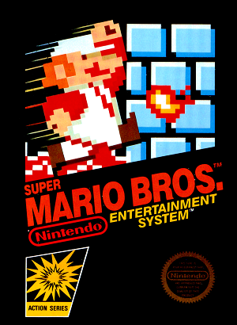

Retro-Spective
Super Mario Bros.
Super Mario Bros. is a 2D platform game released by Nintendo in 1985. The game features one or two player action where player 2 takes on the role of Mario's younger brother, Luigi. The goal of the game is to travel through the Mushroom Kingdom in order to rescue Princess Toadstool. The player(s) may only move left to right, and may not re-visit areas that have already passed off-screen. The player(s) progress through each level in order to reach a flag at the end of the level. In each level, there are coins Mario may collect in order to earn points, with more coins and items hidden in the bricks. The game is beaten when Mario rescues the princess.
